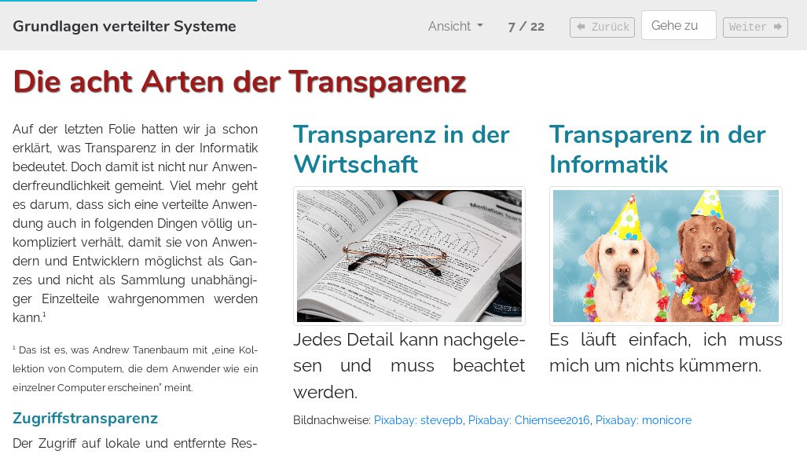

lecture-slides.js ist ein Framework zur Erstellung von Onlinefolien mit
textuellen Erklärungen als Vorlesungsskript. Die auf diese Weise erstellten
Unterlagen können als statische Dateien auf einem einfachen Webserver oder
Learning Management System zur Verfügung gestellt werden. Die Folien eigenen
sich gleichermaßen für das Selbststudium Zuhause wie auch für die Präsentation
am Beamer.
